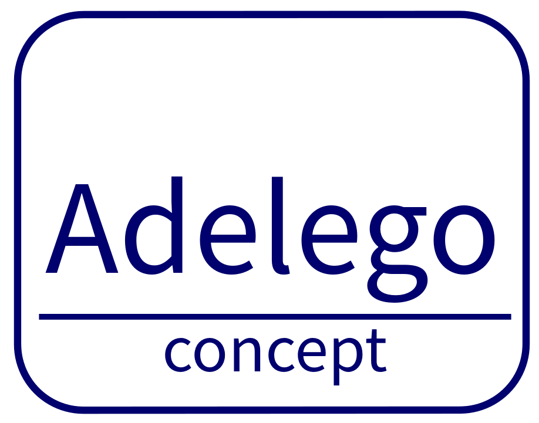

Our fieldwork has led us to take an interest in caregivers and dependent people. A person is dependent if he/she needs someone else to complete daily tasks and a caregiver is a person who helps dependent people. A caregiver can be a nurse, a family member or even a neighbor. In most cases, a caregiver is the spouse or a parent of a dependent person.
Our experiences usually started with the relatives becoming caregivers by helping their loved one who has become dependent. Then, when the dependence had become too important for the caregiver, the dependent person had to be sent to a specialized institution. Often times, there is a long period of care at home during which caregivers tend to put aside their personal, relational and professional life, to assist dependent people.
Despite all the public support for advice and assistance, there are not long-lasting and economically viable solutions to relieve the caregivers who end up leaving their health there too and forgetting their own life. We have been confronted with real human shipwrecks where family members, friends and even acquaintances lost confidence in themselves following accidents or illness, whether they were caregivers or dependent. Our experience has made us understand the suffering of these people and pushed us to find solutions adapted to their situation and their desire to live a safer and better life.
To relieve caregivers in a pragmatic and economical way and improve the safety and well-being of dependent people, we are looking into the installation of sensors connected to digital applications in the homes of dependent people. These applications would continuously collect and analzye data locally to establish a pattern on the way of living of the dependent person and send alerts in case of need. This system remains confidential and the data would only be accessible to caregivers accredited by the dependent person or the family.
This system is called Adelego.
